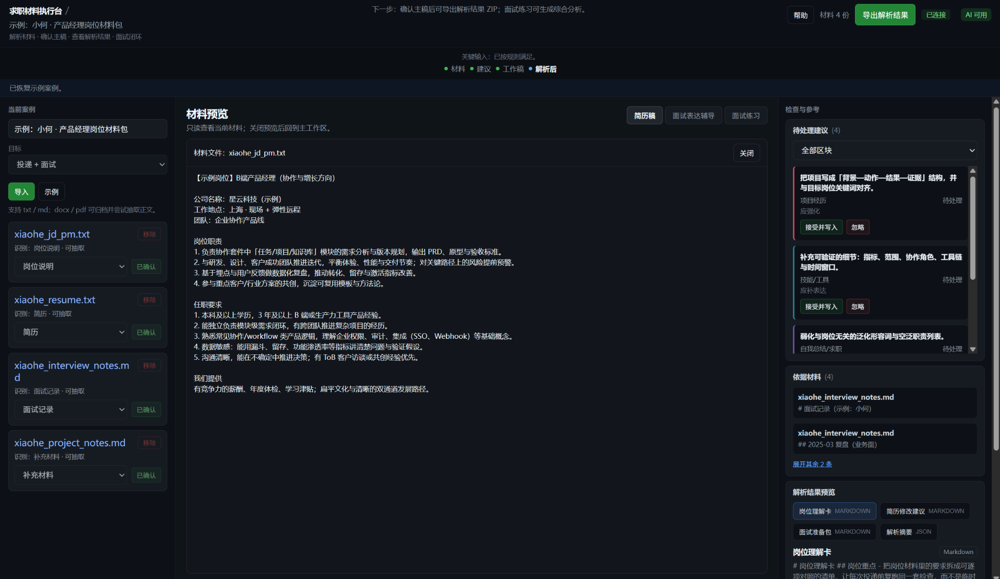

求职材料不只是一份简历
岗位说明、项目补充、面试记录和个人经历会一起影响表达。只处理一份简历，很容易把后续问题留给用户自己消化。
Problem
岗位说明、项目补充、面试记录和个人经历会一起影响表达。只处理一份简历，很容易把后续问题留给用户自己消化。
同一段经历在简历、面试和自我介绍里经常说法不一致。Career Engine 把材料先放进同一个案例，再围绕它推进。
它不是为了多生成几段文字，而是帮助用户看见当前主稿、待处理建议和下一步动作。
Workflow
把简历、岗位说明、面试记录和补充材料放进同一个本地案例。
先确认材料是什么，再决定当前输入能支持哪些生成结果。
以工作稿为主对象，建议只围绕主稿推进，不默认覆盖用户内容。
材料足够时再进入面试表达辅导、练习和可交付的本地导出。
Capabilities
把不同来源的求职材料纳入同一个案例，先确认类型，再判断当前输入能生成什么。
边界：复杂 PDF 和 Word 抽取仍可能受原始排版影响。
中间主区围绕当前工作稿展开，建议可以写入，但主稿始终由用户确认和保存。
边界：v0.1 以简历主稿为核心，暂不做多版本复杂管理。
当材料足够时，系统会从面试官视角给出表达建议、风险提醒和回答思路。
边界：不是聊天机器人，也不会替用户编造不存在的经历。
支持面试题、逐题评分、综合报告和 ZIP 导出。导出内容会按能力和非空结果裁剪。
边界：完整报告需要简历、岗位说明和补充材料支撑。
Interface
页面采用左侧上下文、中间主任务、右侧检查面板的结构，让用户知道材料在哪里、主稿在哪里、下一步在哪里。

启动后不自动进入示例，用户可以选择导入自己的材料，也可以主动打开示例案例。

中间是当前工作稿，右侧是建议、依据材料和解析摘要，主次关系更清楚。

材料足够时再出现面试相关入口，辅导和练习都围绕已导入材料展开。
Positioning
Scope
当前需要本地前后端和模型服务环境，不是免安装 SaaS。
复杂 PDF、Word 版式可能影响抽取质量，需要后续继续加固。
v0.1 优先保证内容可信和不导出空壳，正式模板留到后续版本。
当前重点是跑通单个本地案例的主流程，不先铺复杂案例系统。
Career Engine v0.1